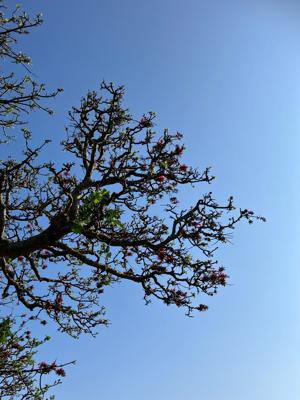
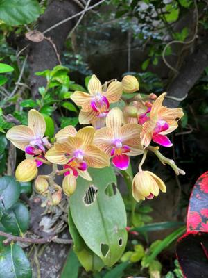
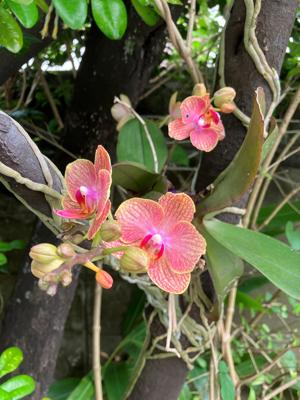
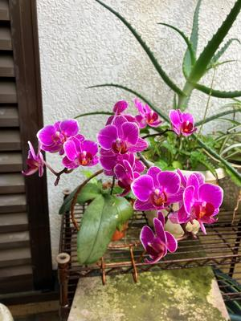

うるがいの話 ある日
最新: win11のXAMPPでPerl開発環境【うるがいの話 ある日】とは 一日だけのプログです
『うるがいの話』の最新一日だけのプログで、通信料が少なく経済的だ。カニの画像をクリックすると全ての日付が載る『うるがいの話』サイトを表示します
|
|
【うるがいの話】 うるがい(ｳﾙｶﾞｲ urugai)とは、『もずくがに』の名前でとても大きくなります。 |
|---|---|
|
|
【カミマヤーの話】 猫のことを方言でマヤーといいます。カミマヤー（kamimayaa）とは、神の猫のことです。 |
|
【たながぁの音楽】 たながぁ（ﾀﾅｶﾞｰ tanagaa）とは手長えびのことで、何種類かあり大きいのは車 エビぐらいになります。 |

|
【ぶながぁの話】 ぶながぁ(ﾌﾞﾅｶﾞｰ bunagaa)とは、赤い髪の毛、赤い身体、そして身長は１ｍ２０ｃｍ ぐらい、川の蟹を食べているの目撃された。場所は沖縄県国頭郡大宜味村のと ある村僕の隣近所に住んでいる爺さんから、聞いた話です。 |
|
|
【ギーマの話】 ギーマ(giima)とは、山原の里山に咲くスズランに似た、 花を付けます。実は食べられます、 気が付くと口の周りが紫になっています。 |
2023年05月03日 (水）win11のXAMPPでPerl開発環境
14:57
   
２０１２年に発行された「つくって覚えるＰｅｒｌ入門」の本をもとにWind
dows11上にXAMPP(xampp-windows-x64-8.2.4-0-VS16-installer.exe)を
インストールした。
ところが、本が発行されてから１０年以上も経ってしまっている。古い本を利
用するときによくあることで本の通りにいかないのである。
ネットも参考し、chatGPTへ質問したが・・・、ま、推奨されないかもしれな
いが手前みその環境なので、以下の対応することで本を最後まで実践できた。
本は良書だと思う、どこかの誰かが参考にするかもとメモることにした。
1.ppm → CPAN,CPANM
p78)ppm install GDGraph → CPAN GD::Graph
そのあと
C:\Strawberry\perl\site\lib\GD → C:\xampp\perl\site\lib
配下へコピーする
p128)ppm install Date::Simple → cpanm Date::Simple
そのあと
mklink/j c:\usr c:\strawberry\perl
参考【2020年】win10のXAMPPでPerl開発環境２♪Perlの場所の宣言
https://soramanabrog.com/thor/xampp-s-perl/
p177)ppm install CGI::Session → CPAN CGI::Session
そのあと
C:\Strawberry\perl\site\lib\CGI → C:\xampp\perl\site\lib
配下へコピーする
メモ ppmの運用はCPANへ、CPANで行えない場合はCPANMでStrawberryへ
モジュールがインストールされる。
XAMPPをインストールする前にStrawberry Perl のインストールしいるので、
特殊変数 @INCは
C:/Strawberry/perl/site/lib
C:/Strawberry/perl/vendor/lib
C:/Strawberry/perl/lib
ところがXAMPPのPerlは特殊変数 @INCが以下のライブラリを前提としている
(@INC contains:
C:/xampp/perl/site/lib/MSWin32-x64-multi-thread
C:/xampp/perl/site/lib
C:/xampp/perl/vendor/lib
C:/xampp/perl/lib)
2.mysql → MariaDBへ
そのためなのだろうか、sample_user の権限でエラーになった
p150)use sample_db; → エラーとなる
sample_userユーザーを再作成し、すべてのDBに権限を与える
■sample_user)ユーザーを削除
drop user sample_user@localhost;
■ユーザーを再作成
create user 'sample_user'@'localhost' identified by 'sample_pass';
■サーバー内のすべてのデータベースに対して権限を付与
GRANT ALL ON *.* TO "sample_user"@"localhost";
3.XAMPP Miraidb 日本語 XAMPPでのMYSQL文字化け
p157) select * from question_tb; → 日本語が化ける！
ただし、コマンドプロンプトだけの表示だけで格納は問題ないので対応せず
１４時５０分 ビットコインの総資産 ￥１１、２５５（↑５１）